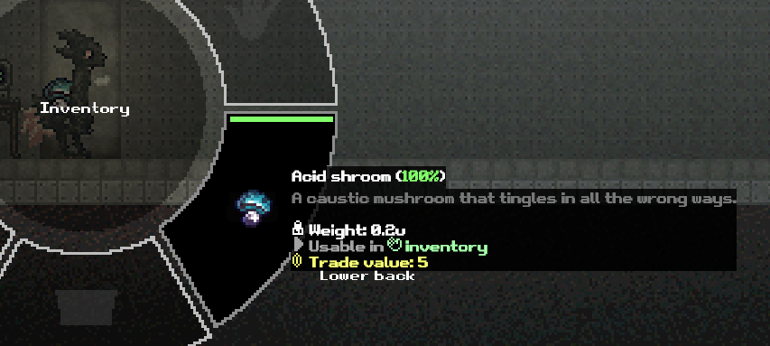

Start with a simple explanation of what the video will cover. Show the finished result, i.e. breaking an acid shroom and crafting a battery from the material. Maybe explain why you might want this library? ( See https://www.nexusmods.com/scavprototype/mods/341?tab=description for info )
Keep this part short-ish. Mention only what people need before starting. Quick cuts maybe?
Have https://cucorelib.web.app/docs/setup/ to the side of the screen in parallel when doing this
Build the guide in a simple order so the audience gets regular progress. Put all of the below code in DoStuff() for ease of use.
Sprite acidShroomSprite = AssetLoader.LoadEmbeddedSprite("Images.acidshroom.png");
Sprite acidMushroomSprite = AssetLoader.LoadEmbeddedSprite("Images.acidmushroom.png", 8f);ItemRegistry.Register("acidshroom", new ItemInfo
{
fullName = "Acid shroom",
description = "A caustic mushroom that tingles in all the wrong ways.",
category = "food",
weight = 0.2f,
value = 5,
usable = true,
tags = "cangetwet",
rec = new Recognition(2),
useAction = (body, item) =>
{
body.Eat(6f, 0.4f);
body.limbs[0].pain += 100f;
body.happiness += 0.5f;
body.sicknessAmount = Mathf.Clamp(body.sicknessAmount + 1.5f, 0f, 100f);
item.condition -= 1f;
Sound.Play("eatCrunch", body.transform.position);
}
}, acidShroomSprite, 1);
LiquidRegistry.Register("hydrochloricacid", new CustomLiquidInfo
{
name = "Hydrochloric acid",
description = "A very highly corrosive liquid. Don't drink it!",
color = new Color(0.8f, 0.8f, 0.8f),
valuePerLiter = 22f,
healthUsable = true,
injectionSickness = 100f,
onDrink = (ml, body) =>
{
float liters = ml * 0.01f; // Convert ml to 100ml for more intuitive values. 100ml is a sip.
body.Drink(liters * 9f);
body.temperature -= liters * 3f;
body.limbs[0].pain += 100f;
body.brainHealth -= liters * 32f;
body.talker.EatBad();
},
onHealthUse = (ml, limb) =>
{
float dose = ml * 0.01f; // 100ml = 1 full opium syringe
limb.pain += dose * 100f;
limb.skinHealth -= dose * 50f;
limb.muscleHealth -= dose * 50f;
limb.infectionAmount -= dose * 10f;
limb.disinfectionTime += dose * 1000f;
},
qualities = new List
{
new CraftingQuality("water", 0.5f)
}
});
RecipeRegistry.Register(new Recipe
{
INT = 6,
category = Recipes.RecipeCategory.Materials,
result = new RecipeResult
{
id = "biochem",
isLiquid = true,
resultCondition = 40f
},
items = new List
{
new RecipeItem(1f)
{
specific = true,
specificId = "acidshroom"
}
}
});
RecipeRegistry.Register(new Recipe
{
INT = 9,
category = Recipes.RecipeCategory.Tools,
result = new RecipeResult
{
id = "mediumbattery",
amount = 1,
isLiquid = false,
resultCondition = 1f
},
items = new List
{
new RecipeItem()
{
specific = true,
specificId = "acidshroom"
},
new RecipeItem()
{
specific = true,
specificId = "acidshroom"
},
new RecipeItem()
{
specific = true,
minimumCondition = 0.5f,
specificId = "processedcopper"
}
}
});
BuildingEntityRegistry.Register("acidmushroom", new CustomBuildingEntityDefinition
{
Name = "Acid mushroom colony",
Description = "A dangerous mushroom cluster that leaks acidic fumes.",
Sprite = AssetLoader.LoadEmbeddedSprite("Images/glowshroom_plant"),
Health = 120f,
Placement = BuildingPlacementType.Floor,
SurfaceOffset = 0.5f,
SpawnMinPerChunk = 0.3f,
SpawnMaxPerChunk = 0.4f,
ItemsDropOnDestroy = new[]
{
BuildingEntityRegistry.AddDrop("acidshroom", 1f, 1f, 2f)
}
});
(remember to get footage for the hook of the video now)
That's it! You now have a basic guide for creating a mod that adds a new item, liquid, recipes, and a building entity to the game, etc etc.. For more info, see the nexusmods in the desc, and the docs also linked in the desc Happy modding~